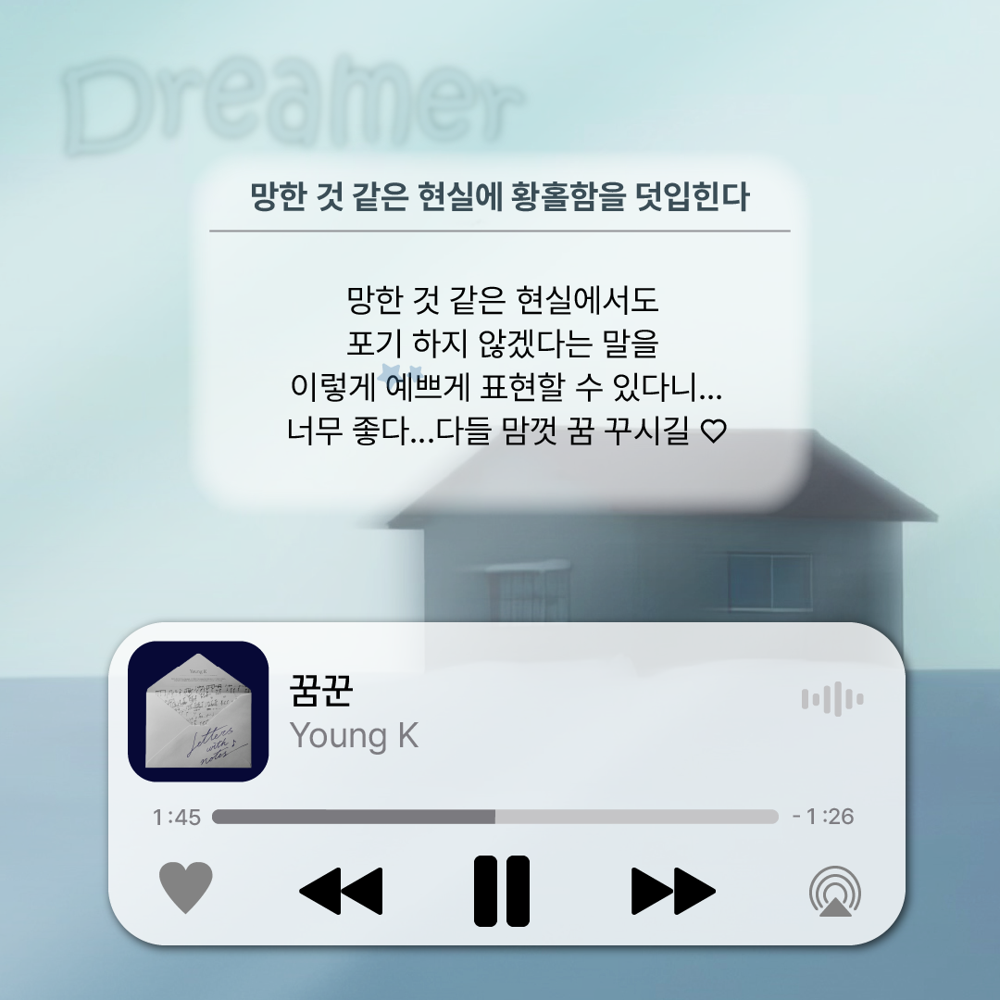
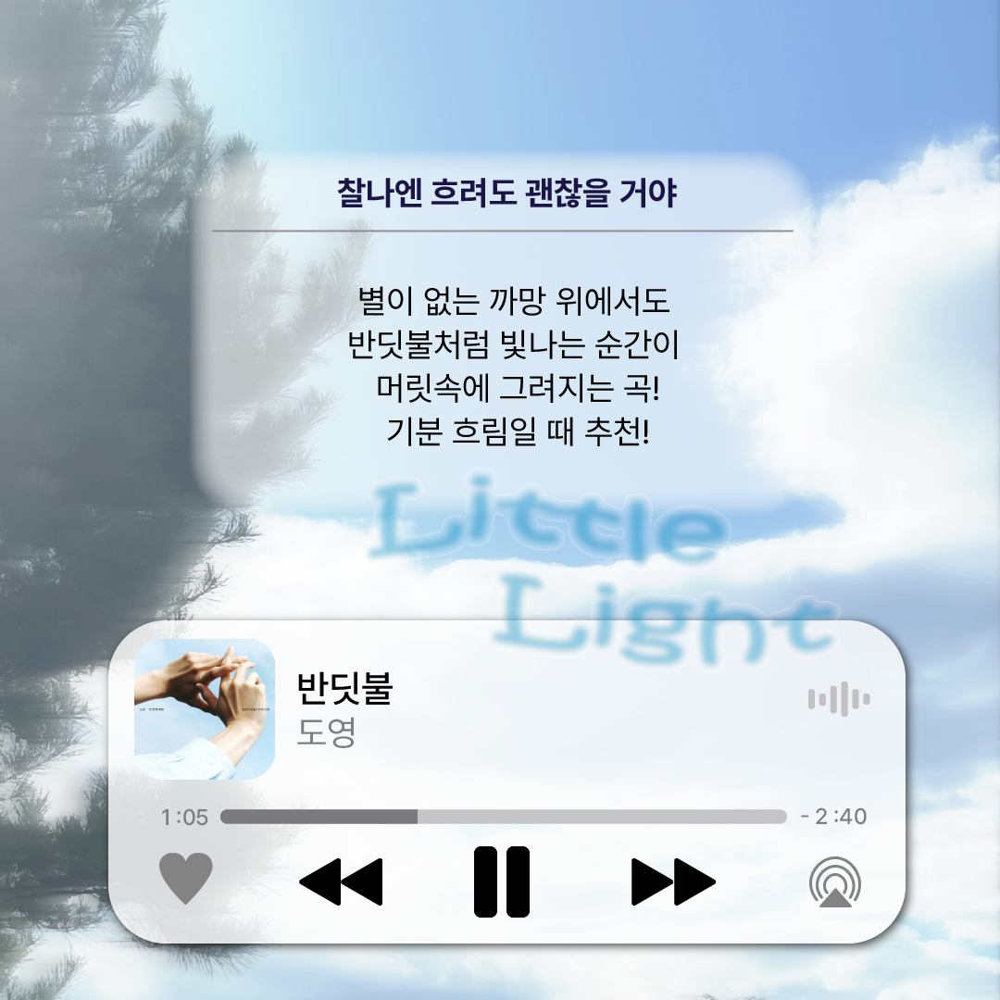
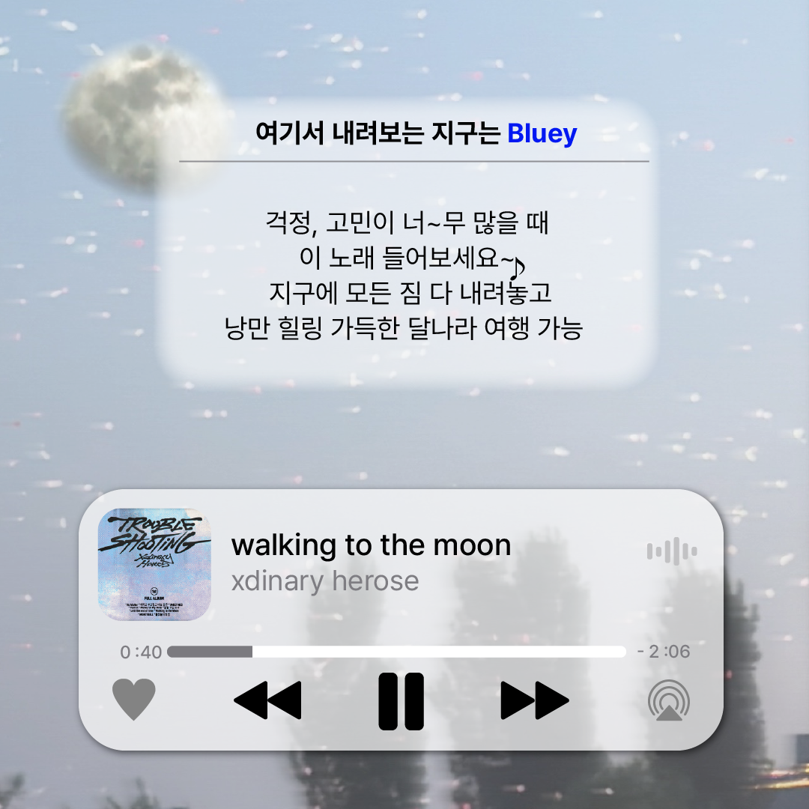
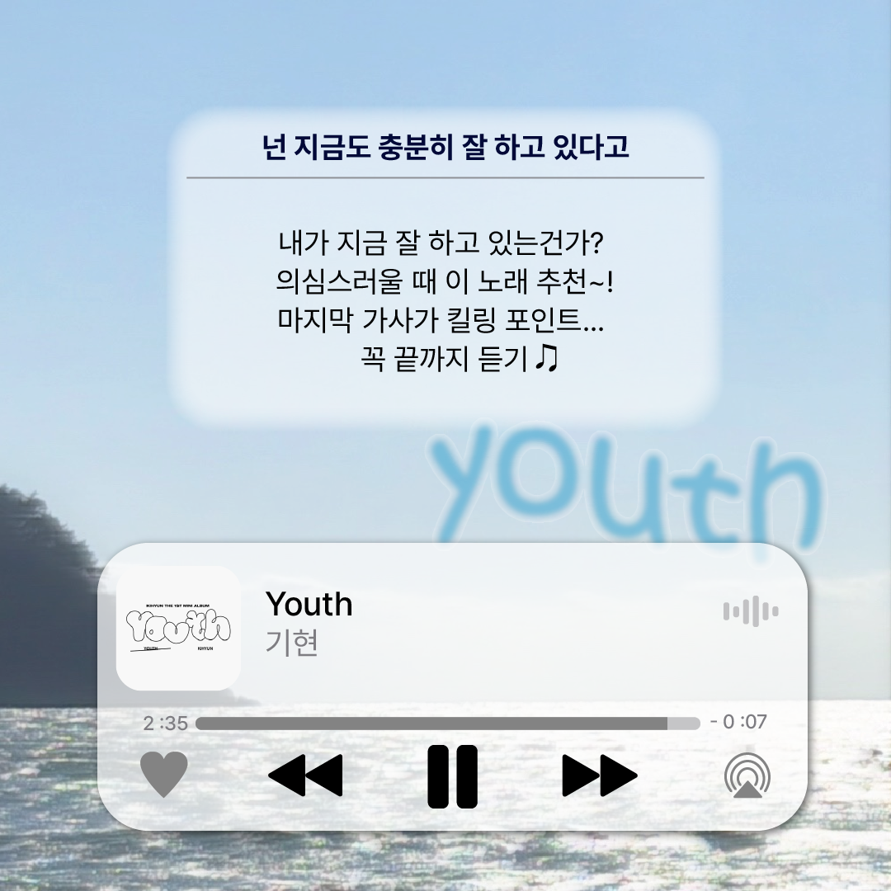
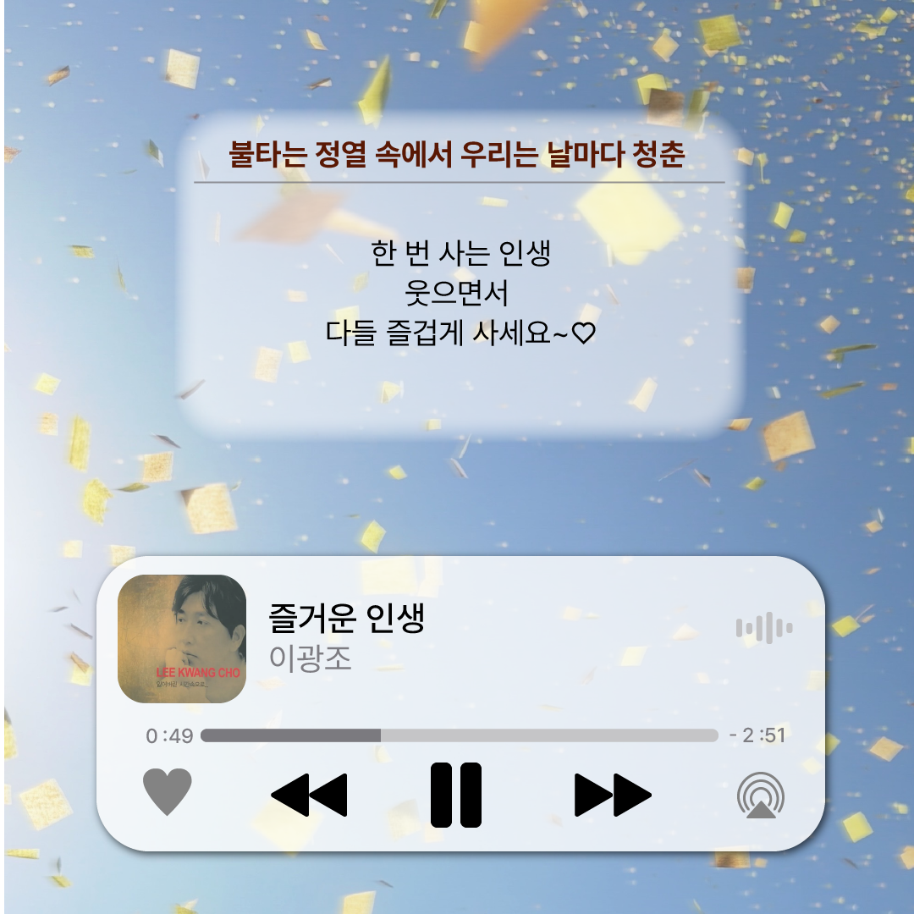
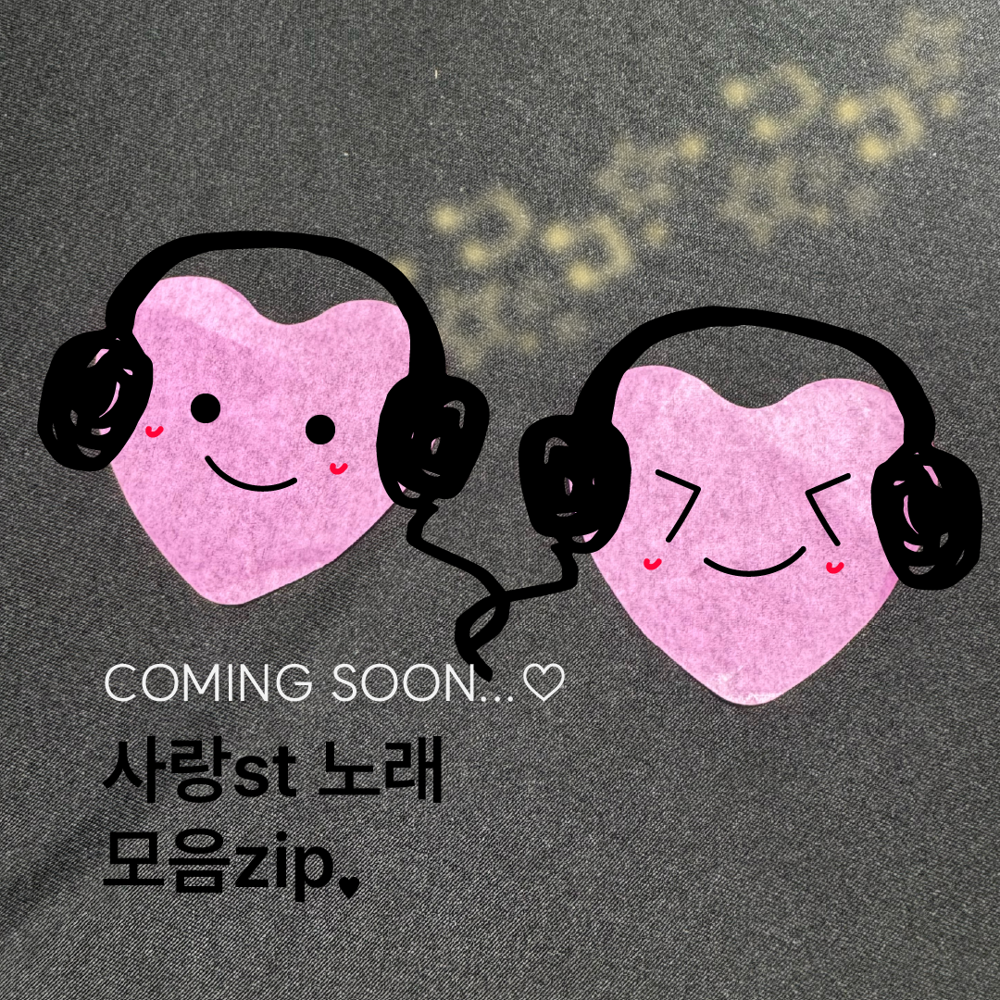

EDITORIAL DESIGN / CARD NEWS
YOUTH
ON REPEAT
청춘st 노래 모음zip
지금의 마음에 건네는 다섯 곡.
음악의 분위기를 이미지와 짧은 글로 풀어낸
7장의 플레이리스트 카드뉴스.

꿈, 위로, 낭만과 즐거움. 다섯 곡을 소개하는 음악 큐레이션 콘텐츠입니다. 하늘빛 배경과 음악 플레이어 모티프로 본문을 연결하고, 손그림 캐릭터가 있는 표지와 다음 편 예고로 시리즈의 시작과 끝을 구성했습니다.
이 카드뉴스에 사용된 모든 이미지는 직접 촬영한 사진입니다.
FORMAT 정사각형 카드뉴스CONTENTS 표지 + 음악 소개 5장 + 예고
THE FULL STORY
순서대로 넘겨 읽는 7장의 이야기청춘st 노래 모음zip
↗꿈꾼 · Young K
↗
반딧불 · 도영
↗
walking to the moon · Xdinary Heroes
↗
Youth · 기현
↗
즐거운 인생 · 이광조
↗
다음 이야기 · 사랑st 노래 모음zip
↗